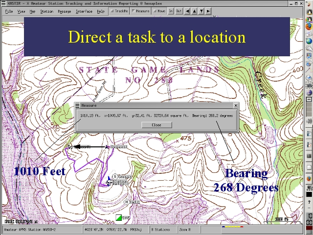

Notes:
Trackers carried by two tasks and observed by a mapping station in a command post can be used to direct one task to another task's location. The APRS mapping software package XASTIR includes a measure function that provides the distance between two points, the bearing from one to the other, and the area of a NS/EW rectangle enclosed by the points. A task can be directed to a location by radio even in the absence of landmarks, road signs or good navigational skills on the part of the task members.